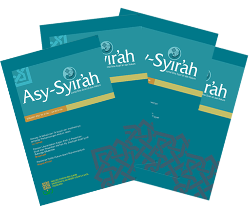

First published: Muharram 1st, 1386/April, 22, 1966
ASY-SYIR'AH is a scientific journal. ASY-SYIR'AH invites Islamic lawyers and jurists to write or disseminate research results relating to shari'a and law issues. Article does not reflect editorial opinion.
ASY-SYIR'AH has been accredited "B" by Surat Keputusan Direktur Jenderal Pendidikan Tinggi Nomor 36b/DIKTI/Kep./2016. The validity period of accreditation from May, 2016 until May, 2021.
ASY-SYIR'AH is published twice a year, on June and December.
ASY-SYIR'AH is a scientific journal. ASY-SYIR'AH invites Islamic lawyers and jurists to write or disseminate research results relating to shari'a and law issues. Article does not reflect editorial opinion.
ASY-SYIR'AH has been accredited "B" by Surat Keputusan Direktur Jenderal Pendidikan Tinggi Nomor 36b/DIKTI/Kep./2016. The validity period of accreditation from May, 2016 until May, 2021.
ASY-SYIR'AH is published twice a year, on June and December.

Announcements
Perubahan Menjadi Jurnal Internasional |
|
| Mulai tahun 2018, Jurnal Asy-Syir'ah akan berubah menjadi jurnal internasional. Dengan demikian, artikel yang akan diterima hanya artikel yang berbahasa PBB, yaitu Arab, Tionghoa, Inggris, Perancis, Rusia, atau Spanyol. Harap menjadi perhatian. | |
| Posted: 2017-04-30 | |
Materi Workshop Jurnal Asy-Syi'rah |
|
| Berikut kami lampirkan materi untuk workshop, silahkan di download pada link berikut KLIK DISINI | |
| Posted: 2015-04-20 | More... |
| More Announcements... |